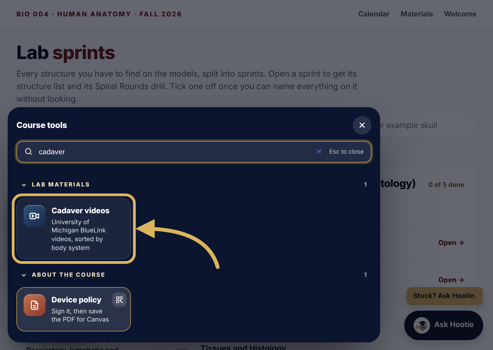
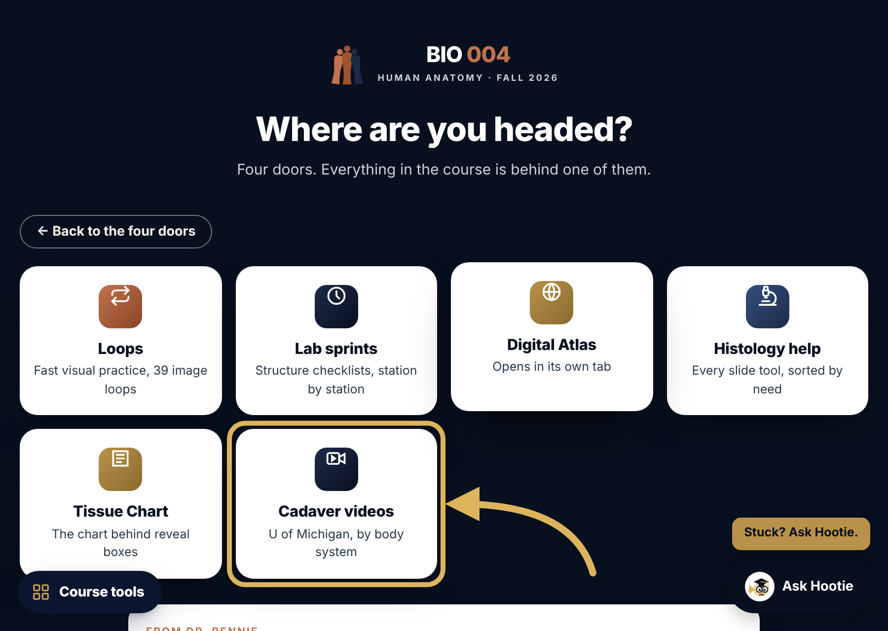

BIO 004 · Human Anatomy · Fall 2026
If you want to see the structures on a real body, the anatomy team at the University of Michigan Medical School (their project is called BlueLink) shares hundreds of free videos. I sorted them by body system so you can go straight to what we are studying.
You can filter by the kind of video, search for a structure, and check off what you watched.
Cadaver videos. It lives with the other Lab materials.
Way 1: Course tools. On any course page, click Course tools in the bottom left corner and type cadaver. The tile is under Lab materials.

Way 2: the four doors. When the Where are you headed screen comes up in Canvas, choose Lab, then Cadaver videos.

Watch a video after you have worked the structure on the models in lab, not instead of it. Pause before each structure is named and try to name it yourself first. For origins, insertions, and actions, pair the muscle videos with Muscle charts, I O A, also in Course tools.
The people in these videos donated their bodies so students could learn. Please watch with the same respect you bring to our lab.